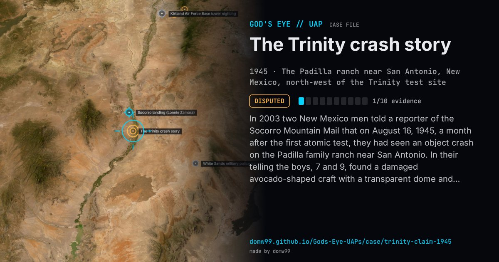

The Trinity crash story

In 2003 two New Mexico men told a reporter of the Socorro Mountain Mail that on August 16, 1945, a month after the first atomic test, they had seen an object crash on the Padilla family ranch near San Antonio. In their telling the boys, 7 and 9, found a damaged avocado-shaped craft with a transparent dome and small creatures inside, “similar to a praying mantis, or a Jerusalem cricket, with pear-shaped heads”. The military took the wreck away and the family was told it was a weather balloon. The men self-published a memoir in 2011, and in 2021 Jacques Vallée and Paola Harris made it the subject of Trinity: The Best-Kept Secret, arguing that it was an earlier Roswell. Critics point out that the story surfaced only decades later, changed between tellings and has no independent witness or record.
Explanation
Nothing but the two men’s account supports it, and it was first told 58 years later. The skeptic Brian Dunning (Skeptoid, 2024) called it “a literal hoax”: Reme Baca pitched several versions to UFO authors, no one corroborates it, and the state policeman said to have looked at the wreck was reportedly in Europe with the Army at the time. Jacques Vallée and Paola Harris, who published the story in 2021, consider it genuine. The “souvenir” the men say they kept has not been analysed by any laboratory.
What was seen
Shape: An avocado-shaped metal craft with a transparent dome
Witnesses: Reme Baca and Jose Padilla, then aged 7 and 9 (by their account)
Duration: An afternoon, then days of recovery work they say they watched